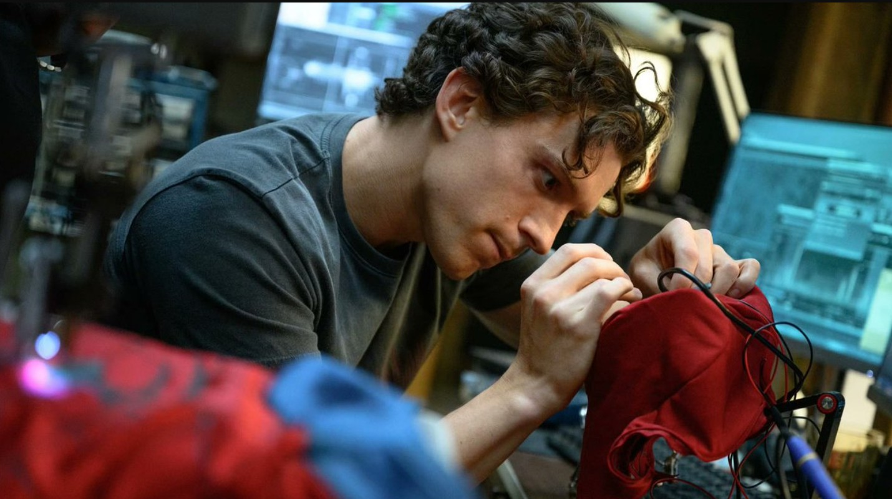

Marvel and Sony's "Spider-Man: Brand New Day" has become one of the biggest theatrical success stories of 2026, reigniting confidence in blockbuster cinema at a moment when the industry has been anxious about theatrical attendance. When Spider-Man: Brand New Day swung into theaters, expectations were towering. Following the multiverse-shattering spectacle of 2021's No Way Home, fans and industry analysts alike wondered how Marvel Studios and Sony Pictures could top a film that brought together three generations of Spider-Men.
A Groundbreaking Theatrical Run
Brand New Day succeeded precisely because it dared to let Peter Parker grow up. The film, directed by Destin Daniel Cretton and starring Tom Holland as Peter Parker alongside Zendaya, Jacob Batalon, Jon Bernthal, Mark Ruffalo, and Sadie Sink, arrived with force. It stormed into cinemas with one of the biggest debuts ever, earning around $168–169 million on its opening day in North America before racing to an estimated $355–360 million over its first weekend. That gave it the second-biggest domestic opening weekend of all time, narrowly behind Avengers: Endgame. Worldwide, audiences turned out in huge numbers, delivering a staggering $927–932 million global debut, with more than $570 million of that coming from international markets. China led the way internationally with $121 million, followed by the United Kingdom with $49 million and Mexico with $38.3 million.
Thomas Stanley Holland was born on June 1, 1996, in Kingston upon Thames, just outside London, the oldest of four boys in a house that ran on humor and creativity. His father, Dominic Holland, is a stand-up comedian. His mother, Nicola, is a photographer. Tom didn't set out to become an actor. He started dance classes around age nine, mostly for fun, and a choreographer who spotted something in him pushed him to audition for Billy Elliot the Musical in the West End. He got in, trained for two years, and eventually landed the title role itself, playing Billy from 2008 to 2010 on a London stage most nine-year-olds have never even seen inside.
Racing Past the Billion and Two Billion Dollar Marks
The momentum didn't slow down. The film crossed the $1 billion mark globally after just six days, making it the second-fastest film in history to hit that milestone, behind only Avengers: Endgame. It kept climbing from there: Spider-Man: Brand New Day reached $2.022 billion worldwide after just 17 days in theaters, again trailing only Endgame, which needed 11 days to reach $2 billion.
That places it among a very small group of films to cross the $2 billion mark, making it the first Spider-Man movie and the first non-Avengers superhero movie to do so. The full $2 billion club now includes Avatar, Avengers: Endgame, Avatar: The Way of Water, Titanic, Ne Zha 2, Star Wars: The Force Awakens, Avengers: Infinity War, and Spider-Man: Brand New Day.
Why the Narrative Struck a Chord
Studio executives have pointed to a mix of scarcity and character connection. Sony chief Tom Rothman told The Hollywood Reporter that there hadn't been a Spider-Man film in five years, so scarcity carried real value, and the audience remains deeply connected to a character whose story feels relatable. Producer Amy Pascal echoed that sentiment, framing the result as proof that audiences are craving stories that feel both spectacular and human. The film has also drawn strong word of mouth, including an "A" CinemaScore, which has helped sustain its climb up the charts.
A Career Milestone for Tom Holland
For lead actor Tom Holland, the success of Brand New Day marked a personal peak. Coupled with his slate of blockbuster releases, the massive gross of his fourth solo MCU film propelled Holland past historic milestones, officially cementing him as the highest-grossing lead actor of all time with a combined global box office exceeding $15.5 billion. By returning to street-level heroics and emotional authenticity, Spider-Man: Brand New Day proved that blockbusters don't always need universe-ending stakes to make history sometimes, a good story about sacrifice and resilience is the most powerful force in cinema.

What It Means for Hollywood
TBeyond Marvel's own fortunes, the film's run has been read as a broader signal. Its success has reignited belief that cinemas can still deliver genuine global blockbusters in the streaming era. Its box office haul has also pushed the Marvel Cinematic Universe's cumulative total past $33.3 billion. With ticket sales still strong and few signs of slowing, "Spider-Man: Brand New Day" looks set to keep climbing the all-time global box office rankings in the weeks ahead cementing itself not just as a franchise triumph, but as a milestone for the theatrical business as a whole.